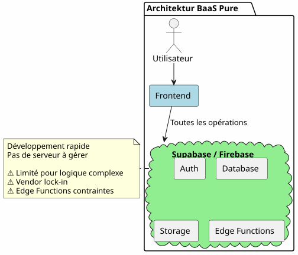
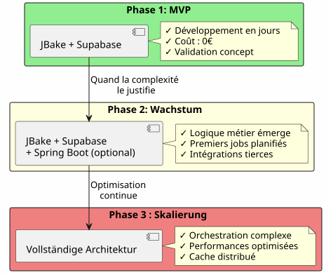
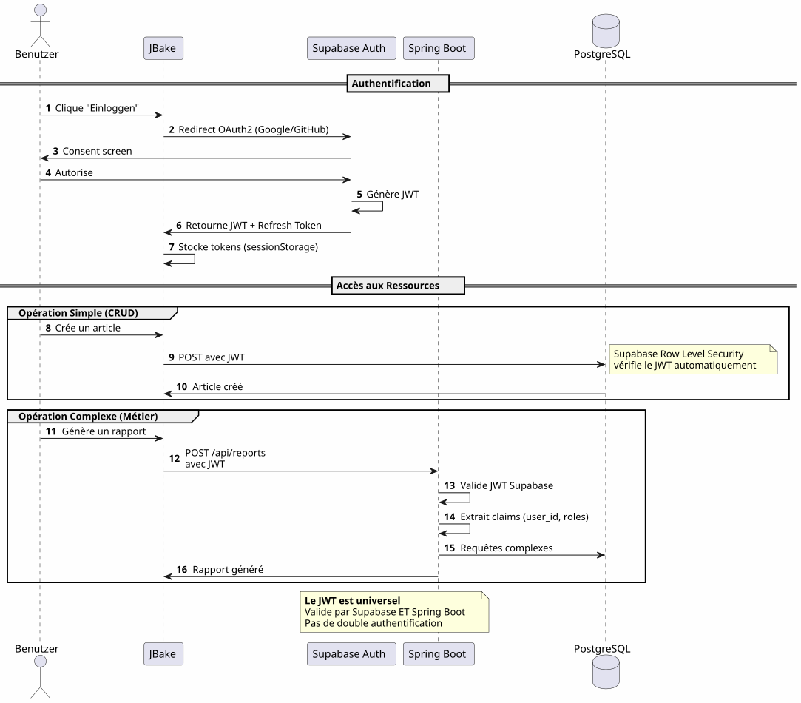
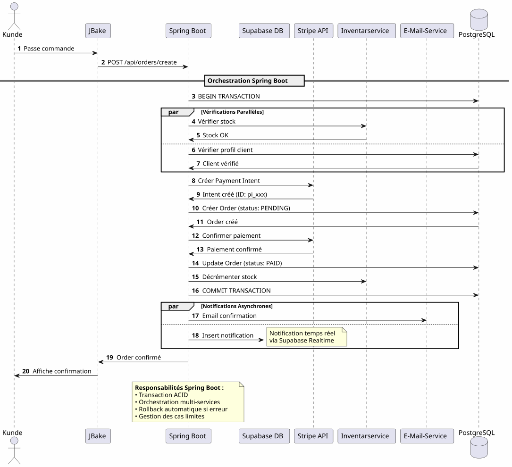
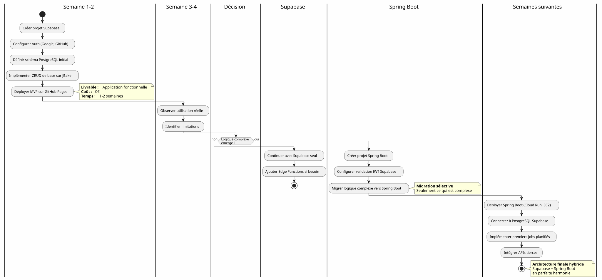

Hybridarchitektur: Das Beste aus beiden Welten mit Supabase und Spring Boot
Publié le 14 January 2026
Statt zwischen der Einfachheit von Supabase und der Leistungsfähigkeit von Spring Boot zu wählen, warum nicht beides kombinieren? Entdecken Sie eine hybride Architektur, die das Beste aus jeder Technologie nutzt.
- tok
-
[]
Das falsche Dilemma der modernen Architektur
Beim Erstellen einer modernen Anwendung mit einem statischen Frontend steht man oft vor einer binären Wahl:
-
Alles auf eine Backend-as-a-Service-Lösung setzen(Supabase, Firebase) - einfach aber begrenzt
-
Ein komplettes Backend bauen(Spring Boot, Node.js) - leistungsstark aber komplex
Diese Wahl ist ein falsches Dilemma. Die hybride Architektur schlägt einen dritten Weg vor: jede Technologie dort einzusetzen, wo sie am besten funktioniert.
Architektonische Vision
Die traditionelle Architektur: Monolithisch
In diesem Ansatz müssen sogar die einfachsten Vorgänge (das Lesen eines Artikels, das Erstellen eines Kommentars) über dein Backend laufen. Du zahlst die Kosten der Komplexität schon ab dem ersten Tag.
Die BaaS-Architektur: Jeder Delegierte

Im Gegensatz dazu ist es zunächst verlockend, alles einem BaaS zu delegieren, doch es zeigt schnell seine Grenzen, sobald die Geschäftslogik komplexer wird.
Die hybride Architektur: Trennung der Verantwortlichkeiten
Die hybride Architektur trennt die Verantwortlichkeiten deutlich nach Komplexität und Art der Operationen.
Entwurfsprinzipien
Prinzip 1: Einfach beginnen, intelligent weiterentwickeln

Bauen Sie Spring Boot nicht, wenn Sie es nicht benötigen.Starte mit Supabase, füge Spring Boot hinzu, wenn die Komplexität es rechtfertigt.
Prinzip 2: Trennung nach Art der Operation

Prinzip 3: Eine einzige Quelle der Wahrheit
Durch das Teilen derselben PostgreSQL-Instanz arbeiten Supabase und Spring Boot mit denselben Daten ohne komplexe Synchronisation.
Orchestrierung der Flüsse
Fluss 1: Zentrale Authentifizierung

Schlüsselpunkt: Ein einziger Authentifizierungsprozess, ein einziger JWT, überall einsetzbar.
Flux 2: Orchestration eines komplexen Geschäftsprozesses

Was Spring Boot bringt: Zuverlässige Orchestrierung komplexer Prozesse, die mehrere Systeme umfassen, mit Transaktionsgarantie.
Flux 3: Geplante Aufträge und Synchronisierungen
Failed to generate image: PlantUML preprocessing failed: [From <input> (line 4) ] @startuml skinparam backgroundColor #FEFEFE participant "Scheduler ^^^^^ Syntax Error? (Assumed diagram type: sequence) @startuml skinparam backgroundColor #FEFEFE participant "Scheduler (Spring Boot)" as scheduler participant "Berichtsservice" as report participant "PostgreSQL" as db participant "Externe API" as api participant "E-Mail-Service" as email participant "Supabase-Speicher" as storage == Job Quotidien : 2h00 == activate scheduler scheduler -> report : Déclenche génération rapport activate report report -> db : Récupère données\ndes dernières 24h db -> report : Dataset report -> report : Calculs & Agrégations report -> report : Génération PDF report -> storage : Upload PDF storage -> report : URL publique report -> email : Envoie aux admins\navec lien PDF deactivate report == Job Hebdomadaire : Dimanche 3h00 == scheduler -> report : Synchronisation externe activate report report -> api : Fetch données externes api -> report : Nouvelles données report -> db : Mise à jour tables report -> db : Nettoyage données obsolètes deactivate report == Job Mensuel : 1er du mois == scheduler -> report : Facturation activate report report -> db : Liste clients actifs report -> report : Calcul montants report -> api : Génération factures (Stripe) report -> email : Envoi factures deactivate report deactivate scheduler note right of scheduler **Impossible avec Supabase seul** Edge Functions non adaptées pour jobs longs et récurrents end note @enduml
Was Spring Boot mitbringt: Zuverlässige geplante Jobs mit Zustandsverwaltung, automatischer Wiederholung und garantierte Ausführung.
Entscheidungsmatrix
Wann Supabase verwenden ?

Wann sollte man Spring Boot verwenden?

Beispiele für Architektur nach Projekttyp
Blog / Portfolio
Urteil: 100% Supabase reicht völlig aus.
SaaS-Anwendung
UrteilHybride Architektur erforderlich. Supabase für das Wesentliche, Spring Boot für den kritischen Teil (Zahlungen, Rechnungsstellung).
E-Commerce
UrteilSpring Boot unverzichtbar. Supabase nur für auth und Katalog.
Progressive Migrationsstrategie

Kosten und betriebliche Überlegungen
Kostenstruktur
Failed to generate image: PlantUML preprocessing failed: [From <input> (line 7) ]
@startuml
skinparam backgroundColor #FEFEFE
package "Geschätzte monatliche Kosten" {
rectangle "MVP-Phase
(0-1000 Nutzer)" #LightGreen {
^^^^^
Syntax Error? (Assumed diagram type: activity)
@startuml
skinparam backgroundColor #FEFEFE
package "Geschätzte monatliche Kosten" {
rectangle "MVP-Phase
(0-1000 Nutzer)" #LightGreen {
[JBake (GitHub Pages): 0€]
[Supabase: 0€]
[Spring Boot: N/A]
note bottom: **Total: 0€/mois**
}
rectangle "Phase Wachstum\n(1k-10k Nutzer)" #LightYellow {
[JBake (GitHub Pages): 0€]
[Supabase: 0€]
[Spring Boot (Cloud Run): 20-50€]
[PostgreSQL (si séparé): 0-30€]
note bottom: **Total: 20-80€/mois**
}
rectangle "Phasenskala
(10k-100k Nutzer)" #LightCoral {
[JBake (Netlify Pro): 19€]
[Supabase Pro: 25€]
[Spring Boot (instances multiples): 100-300€]
[Redis Cache: 20-50€]
[Monitoring: 20€]
note bottom: **Total: 184-414€/mois**
}
}
note right of "Phasenskala
(10k-100k Nutzer)"
À ce stade, les revenus
justifient largement les coûts
end note
@enduml
Operative Verantwortlichkeiten
Fazit : Das perfekte Gleichgewicht
Die hybride Architektur Supabase + Spring Boot ist kein Kompromiss, sie ist eineSynergie.
Die zu beachtenden Prinzipien

Wann sollte diese Architektur gewählt werden?
�✅ Diese Architektur ist ideal wenn :
-
Sie möchten schnell starten (MVP in Tagen, nicht in Monaten)
-
Sie erwarten eine Zunahme der geschäftlichen Komplexität.
-
Sie wollen die Anfangskosten minimieren
-
Sie mögen PostgreSQL und möchten eine einzige Quelle der Wahrheit.
-
Sie schätzen Kotlin und Coroutines für den Geschäftslogik-Code
-
Sie wollen ein komplettes Vendor‑Lock‑In vermeiden.
❌ Diese Architektur ist NICHT geeignet, wenn :
-
Dein Projekt ist einfach und wird einfach bleiben (persönlicher Blog → 100 % Supabase reicht)
-
Du hast bereits einen etablierten Backend‑Stack, den du beherrschst.
-
Sie bevorzugen ein traditionelles Monolith
-
Sie benötigen .NET, Python oder eine andere Sprache für das Backend
Endgültiger Überblick
Failed to generate image: PlantUML preprocessing failed: [From <input> (line 35) ]
@startuml
skinparam backgroundColor #FEFEFE
package "Vollständige hybride Architektur" {
actor "Benutzer" as users
rectangle "Frontend (statisch)" #SkyBlue {
[JBake / GitHub Pages]
note right: Gratuit, CDN global
}
rectangle "Einfaches Backend (Supabase)" #LightGreen {
[Auth OAuth2]
[CRUD APIs]
[Storage]
[Realtime]
note right
Gratuit jusqu'à 50k users
Zéro configuration serveur
end note
}
rectangle "Fachbackend (Spring Boot)" #Coral {
[Orchestration]
[Jobs Planifiés]
[Intégrations]
[Transactions]
note right
Activé uniquement
si nécessaire
end note
}
database "PostgreSQL
^^^^^
Syntax Error? (Assumed diagram type: component)
@startuml
skinparam backgroundColor #FEFEFE
package "Vollständige hybride Architektur" {
actor "Benutzer" as users
rectangle "Frontend (statisch)" #SkyBlue {
[JBake / GitHub Pages]
note right: Gratuit, CDN global
}
rectangle "Einfaches Backend (Supabase)" #LightGreen {
[Auth OAuth2]
[CRUD APIs]
[Storage]
[Realtime]
note right
Gratuit jusqu'à 50k users
Zéro configuration serveur
end note
}
rectangle "Fachbackend (Spring Boot)" #Coral {
[Orchestration]
[Jobs Planifiés]
[Intégrations]
[Transactions]
note right
Activé uniquement
si nécessaire
end note
}
database "PostgreSQL
Einzige Quelle der Wahrheit" as db #LightGray
users --> [JBake / GitHub Pages]
[JBake / GitHub Pages] --> [Auth OAuth2]
[JBake / GitHub Pages] --> [CRUD APIs]
[JBake / GitHub Pages] --> [Storage]
[JBake / GitHub Pages] --> [Realtime]
[JBake / GitHub Pages] --> [Orchestration]
[Auth OAuth2] --> db
[CRUD APIs] --> db
[Orchestration] --> db
[Jobs Planifiés] --> db
[Intégrations] --> db
}
note bottom of db
**Une seule base, deux consommateurs**
• Supabase pour le simple
• Spring Boot pour le complexe
• Aucune synchronisation requise
end note
@enduml
Das Beste aus beiden Welten
Diese Architektur gibt Ihnen:
🚀 Die Geschwindigkeit von Supabase
-
Start in Stunden, nicht in Wochen
-
OAuth2-Authentifizierung in wenigen Klicks
-
Automatisch generierte REST-APIs
-
Zero-Konfiguration für Server
�💪 Die Macht von Spring Boot
-
Kotlin und Coroutines für eleganten asynchronen Code
-
Orchestrierung komplexer Geschäftsprozesse
-
Zuverlässig geplante Jobs
-
ACID-Transaktionen garantiert
-
Vollständiges Spring-Ökosystem
�💰 Die progressive Wirtschaft
-
0€ zum Starten und Validieren
-
Kosten, die dem Wachstum folgen
-
Kein vorzeitiges Über-Engineering
�🎯 Die architektonische Flexibilität
-
Progressive Migration ohne Neugestaltung
-
Hinzufügen von Spring Boot nur, wenn nötig
-
Kein vollständiger Vendor-Lock-in
-
Erweiterbare Architektur
Um weiter zu gehen
Technische Ressourcen
Dokumentation Supabase :
Dokumentation Spring Boot :
Zusatzartikel:
-
Sicherung der APIs mit JWT
-
Optimierung der PostgreSQL-Performance
-
Progressive Migrationsmuster
-
Fehlerbehandlung in verteilter Architektur
Reale Anwendungsfälle
Diese hybride Architektur wird erfolgreich in:
-
SaaS B2B: Supabase-Authentifizierung, Abrechnung Spring Boot
-
Marktplätze: Supabase-Katalog, Spring Boot-Transaktionen
-
InhaltsplattformenArtikel Supabase, Analytics Spring Boot
-
Interne Werkzeuge: CRUD Supabase, Workflows Spring Boot
Start-Checkliste
Phase 1 - Grundlagen (Woche 1)
-
Supabase-Konto erstellen - [ ] PostgreSQL-Projekt konfigurieren - [ ] Auth aktivieren (Google, GitHub) - [ ] Initialschema definieren - [ ] Row-Level-Sicherheit konfigurieren - [ ] APIs von JBake testen
Phase 2 - MVP (Woche 2-3)
-
Hauptseiten implementieren - [ ] OAuth2-Authentifizierung integrieren - [ ] CRUD-Formulare erstellen - [ ] Speicher für Dateien einrichten - [ ] Auf GitHub Pages bereitstellen - [ ] Testen unter realen Bedingungen
Phase 3 - Entwicklung (bei Bedarf)
-
Bedarf an komplexer Logik identifizieren - [ ] Spring Boot-Projekt erstellen falls nötig - [ ] JWT-Validierung in Supabase konfigurieren - [ ] Verbinden mit PostgreSQL Supabase - [ ] Komplexe Funktionen migrieren - [ ] Geplante Jobs implementieren - [ ] Spring Boot bereitstellen (Cloud Run usw.)
Anti-Patterns zu vermeiden
❌ Mach das nicht :
-
Dupliziere die Daten zwischen Supabase und Spring Boot
-
Zwei getrennte PostgreSQL-Datenbanken erstellen
-
Codieren Sie die Authentifizierung selbst
-
Verwenden Sie Spring Boot für simples CRUD
-
Von Anfang an über-architekturieren
-
Row Level Security von Supabase ignorieren
Machen Sie lieber:
-
Eine einzige PostgreSQL-Datenbank teilen
-
Supabase die Authentifizierung verwalten lassen
-
Spring Boot nur wegen der Komplexität verwenden
-
Einfach beginnen, sich schrittweise weiterentwickeln
-
Die Stärken jeder Technologie nutzen
-
Mit RLS auf Datenbankebene sichern
Entwicklungsperspektiven
Hinzufügen neuer Fähigkeiten
Horizontale Skalierung
Wenn Ihre Anwendung wächst, skaliert die hybride Architektur natürlich:
Supabase :
-
Scale skaliert automatisch bis zu Millionen von Operationen
-
Lese-Replikate für Leseleistung
-
Zeitpunktbezogene Wiederherstellung für die Sicherheit
Spring Boot :
-
Mehrere Instanzen hinter load balancer
-
Zustandsloses Design erleichtert die horizontale Skalierung.
-
Kubernetes für Orchestrierung bei Bedarf
PostgreSQL:
-
Partitionierung für große Tabellen
-
Verbindungspooling (PgBouncer)
-
Sharding ist wirklich notwendig (selten)
Architektonische Zeugnisse
Start-up SaaS (50k Nutzer)
_ Wir haben mit 100 % Supabase begonnen. Bei 5 k Nutzern haben wir Spring Boot ausschließlich für die Stripe‑Abrechnung und die monatlichen Berichte hinzugefügt. Ein Jahr später laufen immer noch 80 % unserer Vorgänge über Supabase. Spring Boot übernimmt nur den kritischen Teil. Diese Trennung hat es uns ermöglicht, zu skalieren, ohne eine Überarbeitung vorzunehmen. _
E-Learning-Plattform (10k Nutzer)
_ Die OAuth2-Authentifizierung von Supabase hat uns 3 Wochen Entwicklungszeit gespart. Die automatisch generierten APIs verwalten unseren gesamten Kurskatalog. Spring Boot wird nur für die PDF-Zertifikate und Fortschritts-E-Mails verwendet. Einfache, wartbare, skalierbare Architektur. _
Marketplace B2B (3k Nutzer)
_ Spring Boot verwaltet die Transaktionen zwischen Käufern und Verkäufern (kritisch). Supabase verwaltet alles andere: Profile, Echtzeit-Messaging, Dokumente. Der Umstand, dass sie dieselbe PostgreSQL-Datenbank teilen, erspart uns jede komplexe Synchronisation. Die beste architektonische Entscheidung, die wir je getroffen haben. _
Synthese: Ein modernes architektonisches Paradigma
Die hybride Architektur Supabase + Spring Boot repräsentiert ein neues Paradigma:architektonische Spezialisierung.
Failed to generate image: PlantUML preprocessing failed: [From <input> (line 20) ]
@startuml
skinparam backgroundColor #FEFEFE
rectangle "Altes Paradigma" #LightCoral {
card "Alles im Backend" {
[Auth]
[CRUD]
[Logique Métier]
[Jobs]
[Storage]
[Realtime]
}
note bottom
Complexité maximale
dès le jour 1
end note
}
rectangle "Neues Paradigma" #LightGreen {
card "Supabase
^^^^^
Syntax Error? (Assumed diagram type: component)
@startuml
skinparam backgroundColor #FEFEFE
rectangle "Altes Paradigma" #LightCoral {
card "Alles im Backend" {
[Auth]
[CRUD]
[Logique Métier]
[Jobs]
[Storage]
[Realtime]
}
note bottom
Complexité maximale
dès le jour 1
end note
}
rectangle "Neues Paradigma" #LightGreen {
card "Supabase
(Bequemlichkeit)" {
[Auth]
[CRUD Simple]
[Storage]
[Realtime]
}
card "Spring Boot
(Differenzierung)" {
[Logique Métier]
[Jobs]
[Intégrations]
}
note bottom
Complexité progressive
ajoutée seulement si nécessaire
end note
}
[Ancien Paradigme] -right-> [Nouveau Paradigme] : Évolution
@enduml
Das grundlegende Prinzip :Bauen Sie nicht das, was bereits als Service existiert. Konzentrieren Sie sich auf das, was Ihre Anwendung unterscheidet.
Die 80/20-Regel
In den meisten Anwendungen:
-
80 % der OperationenSie sind standardmäßiger CRUD → Supabase
-
20% der Vorgängebenötigt Geschäftslogik → Spring Boot
Diese natürliche Regel rechtfertigt die hybride Architektur.
Endgültige Schlussfolgerung
Die hybride Architektur ist kein technischer Kompromiss, sie ist einestrategische Entscheidung(No visible characters – output is empty.)
Es ermöglicht Ihnen:
-
✅ Schnell mit einem funktionalen MVP starten
-
✅ Ihren Markt ohne hohe Investitionen validieren
-
Schrittweise weiterentwickeln, wenn die Komplexität es erfordert.
-
Ihre Kosten bei jedem Schritt kontrollieren
-
Das Beste aus jeder Technologie nutzen
-
�✅ Vermeiden vorzeitiges Überengineering
-
Flexibilität für die Zukunft bewahren
Sie stellt dar:
-
�🎯PragmatismusJede Technologie, in der sie hervorragend ist
-
�🚀Geschwindigkeit: minimale Time-to-Market
-
�💰WirtschaftKosten, die am Wert ausgerichtet sind
-
�🔮Skalierbarkeit: Architektur, die mit Ihnen wächst
-
�🛡️Robustheit: Erprobte und zuverlässige Dienstleistungen
Ihr nächster Schritt
Wenn Ihnen diese Architektur zusagt, hier ist, wo Sie anfangen können:
-
Erstellen Sie ein Supabase-Konto(kostenlos)
-
Definieren Sie Ihr minimales Datenschema
-
Konfigurieren Sie die OAuth2-Authentifizierung
-
Erstelle deine erste JBake-Seite, die die API nutzt
-
Stellen Sie auf GitHub Pages bereit
Sie werden ein funktionsfähiges MVP haben ineinige Tage.
Spring Boot wird natürlich kommen, wenn Sie es benötigen. Nicht früher.
Die hybride Architektur ist die Kunst, genau das zu bauen, was nötig ist, wenn es nötig ist.
Gute Entwicklung! 🚀
Teilen Sie diesen Artikel, wenn Sie denken, dass er anderen Entwicklern helfen kann, die richtigen architektonischen Entscheidungen zu treffen.